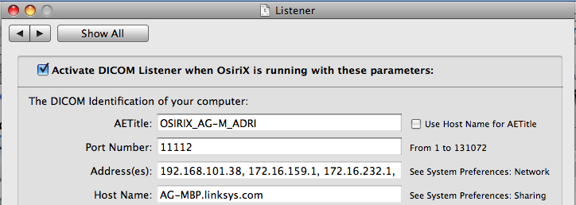
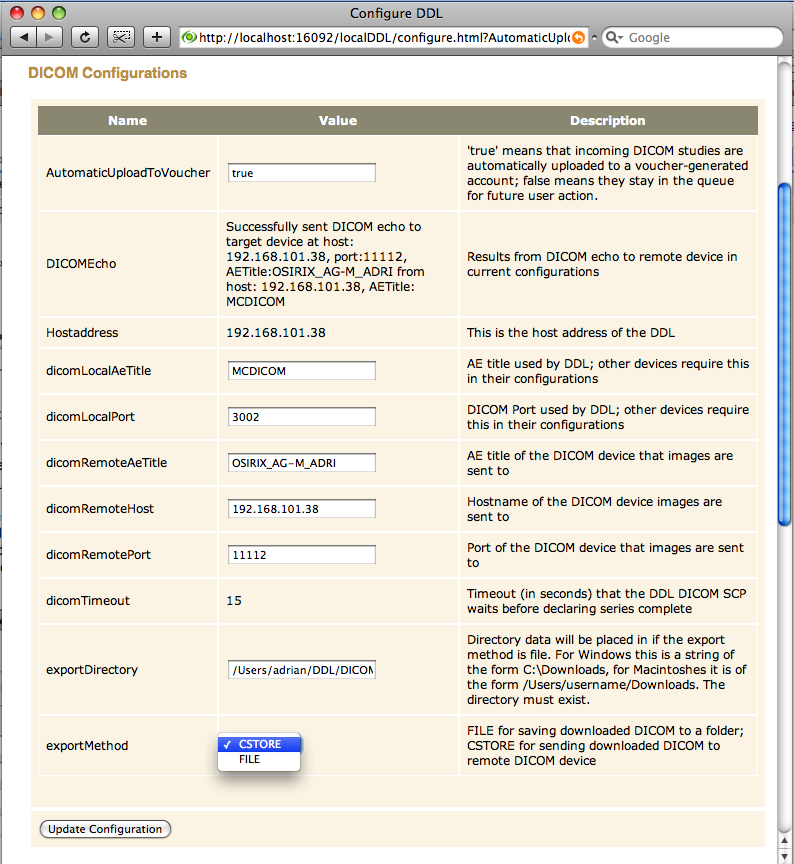

| |
DICOM Networking
1 - Get the DICOM parameters for your workstation or
PACS
- Each system hides these differently. You may need to contact
your PACS administrator.
- The three parameters to remember are:
- AETitle (e.g.: OSIRIX_AG-M_ADRI)
- Port (e.g.: 11112)
- IP Address or Host Name (e.g.:
192.168.101.38)
- Many PACS and some workstations do not accept DICOM from
strangers.
- They will need to be configured with the DICOM parameters of
the DDL.
- These parameters are displayed by the Configure DDL screen as
Hostaddress, dicomLocalAeTitle, dicomLocalPort (see Fig 8).

2 - Select Configure DDL
- DDL installation and startup are automatic and take about a
minute. Check and accept any security warnings that pop up.
- If installation seems to take too long, check your desktop
for hidden Java windows asking for permission.
- If there are already Orders on the queue the DDL Poller will
grab them before you have a chance to configure DICOM. This will be
improved in a future release.
- The DDL icon will be in the system tray (PC) or the system bar
(Mac).

3 - Set the DICOM Remote Parameters to match your workstation or PACS
(from Step 1)
- Enter the parameters
- dicomRemoteAeTitle gets AETitle
- dicomRemoteHost gets IP Address
- dicomRemotePort gets Port
- Set the exportMethod
- Click Update Configuration
- When the page refreshes, DICOMEcho should report success.

|
|